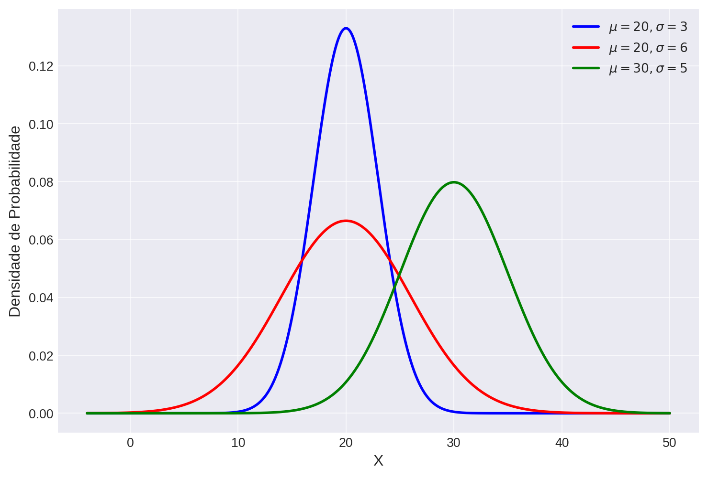
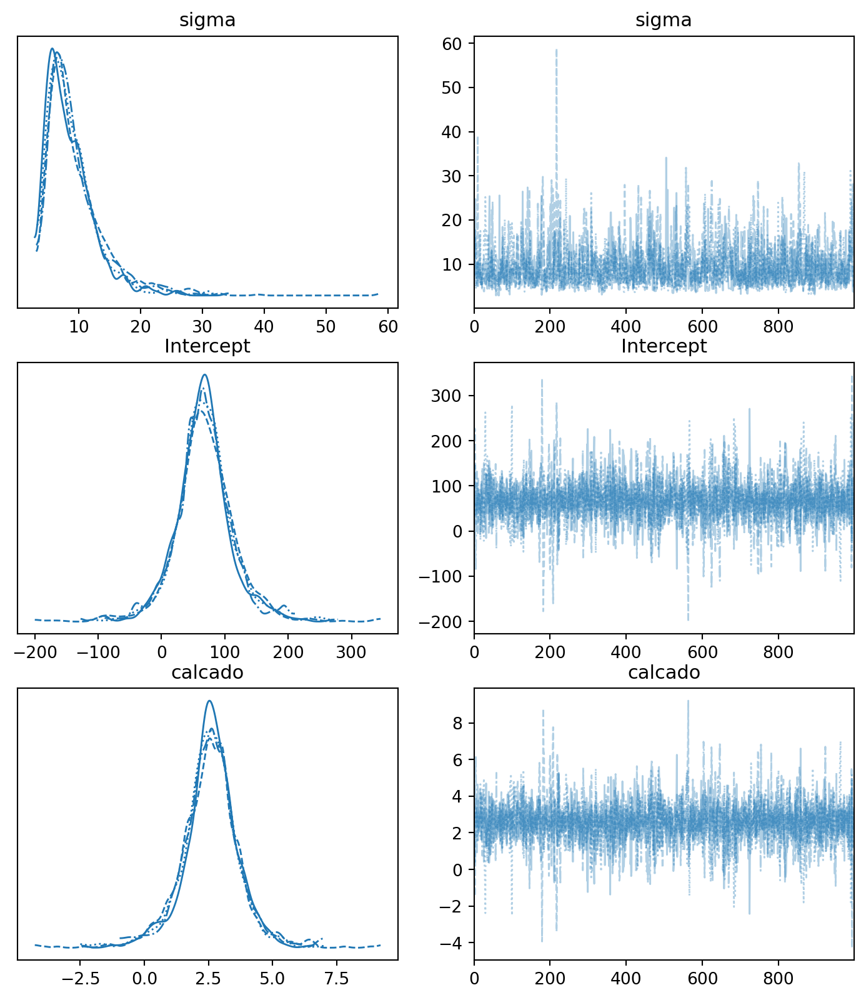
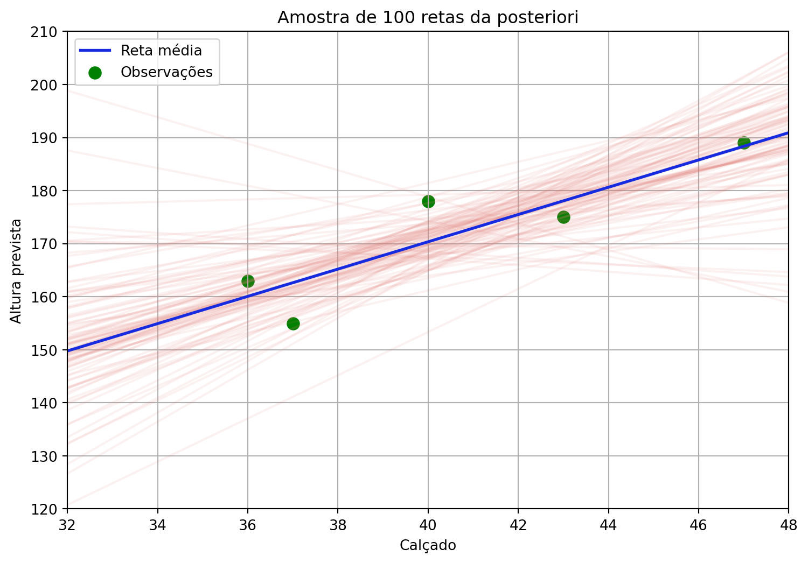
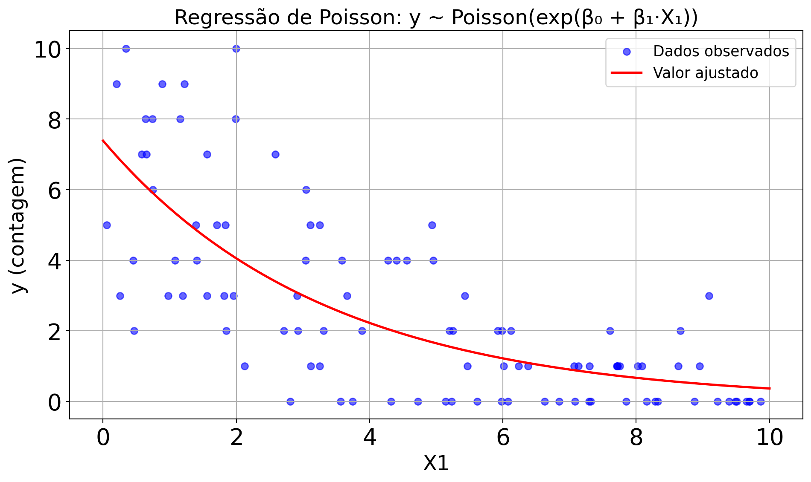
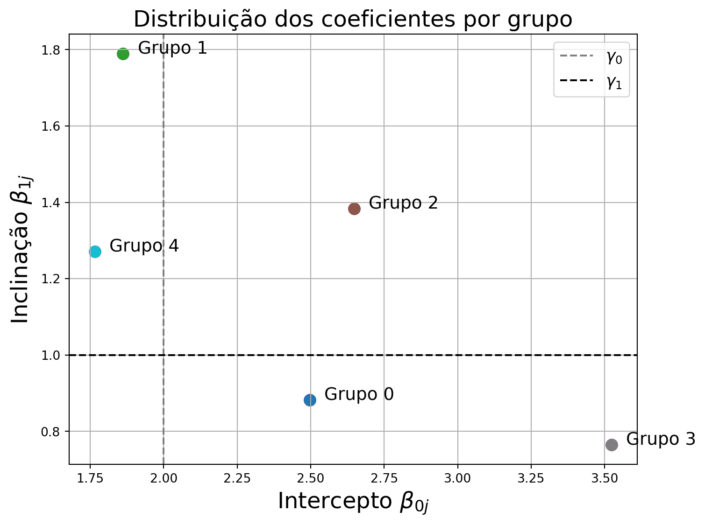

Explorando Modelos de Regressão Bayesiana
Dos modelos lineares a respostas generalizadas e estruturas hierárquicas
Prof. Fabio Cop
Laboratório de Ecologia e Dinâmica de Comunidades (LaEDCom)
O que aprendemos até aqui: prioris e posterioris
O que aprendemos até aqui: distribuição Normal de Probabilidade
\[ f(y) = \frac{1}{\sqrt{2\pi\sigma^2}} e^{-\frac{1}{2} \left(\frac{y - \mu}{\sigma} \right)^2} \longrightarrow \quad y \sim \mathcal{N}(\mu, \sigma) \]
O que aprendemos até aqui: o modelo de Regressão linear
Variável aleatória resposta
\[ y \sim \mathcal{N}(\mu, \sigma) \]
\[ \mu = \beta_0 + \beta_1 x \]
Prioris
\[ \beta_0 \sim \mathcal{N}(\mu_{\beta_0}, \sigma_{\beta_0}) \]
\[ \beta_1 \sim \mathcal{N}(\mu_{\beta_1}, \sigma_{\beta_1}) \]
\[ \sigma \sim \text{Lognormal}(\mu_{\log \sigma}, \sigma_{\log \sigma}) \]

O que aprendemos até aqui: Programação Probabilística
PyMC
with pm.Model() as modelo:
# Definição das prioris
Intercept = pm.Normal("Intercept", mu=60, sigma=5)
calcado = pm.Normal("calcado", mu=2.8, sigma=0.1)
sigma = pm.HalfNormal("sigma", sigma=10)
# Definição do modelo
mu = beta_0 + beta_1 * X
altura = pm.Normal("altura", mu=mu, sigma=sigma,
observed=Y)
# Amostra a distribuição posterior
resultados = pm.sample()Bambi
# Definição das prioris
custom_priors = {
"Intercept": bmb.Prior("Normal", mu=60, sigma=5),
"calcado": bmb.Prior("Normal", mu=2.8, sigma=0.1),
"sigma": bmb.Prior("HalfNormal", sigma=10)
}
# Definição do modelo
modelo = bmb.Model("altura ~ calcado", df,
priors=custom_priors)
# Amostra a distribuição posterior
resultados = modelo.fit()O que aprendemos até aqui: ajuste da posteriori


Daqui para frente: uma variedade de modelos e estruturas
- Extenção da Regressão Linear para:
- Múltiplos preditores.
- Diferentes tipos de variáveis resposta (GLMs).
- Dados com estrutura de agrupamento (Modelos Hierárquicos).
Regressão linear múltipla
Variável aleatória resposta
\[ y \sim \mathcal{N}(\mu, \sigma) \]
\[ \mu = \beta_0 + \beta_1 x_1 + \beta_2 x_2 + \dots + \beta_k x_k \]
Prioris
\[ \beta_0 \sim \mathcal{N}(\mu_{\beta_0}, \sigma_{\beta_0}) \]
\[ \beta_j \sim \mathcal{N}(\mu_{\beta_j}, \sigma_{\beta_j}) \quad \text{para } j = 1, \dots, k \]
\[ \sigma \sim \text{Lognormal}(\mu_{\log \sigma}, \sigma_{\log \sigma}) \]
Programação Probabilística
PyMC
with pm.Model() as modelo:
# Definição das prioris
Intercept = pm.Normal("Intercept", mu=60, sigma=5)
beta_1 = pm.Normal("beta_1", mu=2.8, sigma=0.1)
beta_2 = pm.Normal("beta_2", mu=1.5, sigma=0.1)
sigma = pm.HalfNormal("sigma", sigma=10)
# Definição do modelo
mu = Intercept + beta_1 * X1 + beta_2 * X2
altura = pm.Normal("altura", mu=mu, sigma=sigma,
observed=Y)
# Amostra a distribuição posterior
resultados = pm.sample()Bambi
# Definição das prioris
custom_priors = {
"Intercept": bmb.Prior("Normal", mu=60, sigma=5),
"X1": bmb.Prior("Normal", mu=2.8, sigma=0.1),
"X2": bmb.Prior("Normal", mu=1.5, sigma=0.1),
"sigma": bmb.Prior("HalfNormal", sigma=10)
}
# Definição do modelo
modelo = bmb.Model("altura ~ X1 + X2", df,
priors=custom_priors)
# Amostra a distribuição posterior
resultados = modelo.fit()Regressão de Poisson: dados de contagem
\[ y \sim \text{Poisson}(\lambda) \]
\[ \log(\lambda) = \mu = \beta_0 + \beta_1 x \]

Regressão de Poisson: dados de contagem
\[ f(y) = \frac{e^{-\lambda} \lambda^y}{y!} \longrightarrow \quad y \sim \text{Poisson}(\lambda) \]
\[ \log(\lambda) = \mu \]
Variável aleatória resposta
\[ y \sim \text{Poisson}(\lambda) \]
\[ \log(\lambda) = \mu = \beta_0 + \beta_1 x \]
Prioris
\[ \beta_0 \sim \mathcal{N}(\mu_{\beta_0}, \sigma_{\beta_0}) \]
\[ \beta_1 \sim \mathcal{N}(\mu_{\beta_1}, \sigma_{\beta_1}) \]
Programação Probabilística
PyMC
with pm.Model() as modelo:
# Definição das prioris
Intercept = pm.Normal("Intercept", mu=0, sigma=5)
beta = pm.Normal("beta", mu=0, sigma=2)
# Função de ligação log: log(λ) = μ = Intercept + beta * X
mu = Intercept + beta * X
lambda_ = pm.math.exp(mu)
# Modelo de verossimilhança
contagem = pm.Poisson("contagem", mu=lambda_,
observed=Y)
# Amostragem
resultados = pm.sample()Bambi
# Definição das prioris
custom_priors = {
"Intercept": bmb.Prior("Normal", mu=0, sigma=5),
"x": bmb.Prior("Normal", mu=0, sigma=2),
}
# Modelo com função de ligação log (default da família Poisson)
modelo = bmb.Model("contagem ~ x", df,
family="poisson", priors=custom_priors)
# Amostragem
resultados = modelo.fit()Regressão Logística: dados dicotômicos
\[ y \sim \text{Bernoulli}(p) \]
\[ \log\left(\frac{p}{1-p}\right) = \mu = \beta_0 + \beta_1 x \]
\[ p = \frac{e^{\beta_0 + \beta_1 x}}{1 + e^{\beta_0 + \beta_1 x}} \]

Regressão Logística: dados dicotômicos
Distribuição da variável resposta
\[ f(y) = p^y (1 - p)^{1 - y} \]
\[ y \sim \text{Bernoulli}(p) \]
Função de ligação
\[ \text{logit}(p) = \mu = \beta_0 + \beta_1 x \]
\[ \text{logit}(p) = \log\left(\frac{p}{1 - p}\right) \]
\[ \log\left(\frac{p}{1 - p}\right) = \beta_0 + \beta_1 x \]
\[ \frac{p}{1 - p} = e^{\beta_0 + \beta_1 x} \]
\[ p = (1 - p) \cdot e^{\beta_0 + \beta_1 x} \]
\[ p = e^{\beta_0 + \beta_1 x} - p \cdot e^{\beta_0 + \beta_1 x} \]
\[ p \left(1 + e^{\beta_0 + \beta_1 x}\right) = e^{\beta_0 + \beta_1 x} \]
\[ p = \frac{e^{\beta_0 + \beta_1 x}}{1 + e^{\beta_0 + \beta_1 x}} = \frac{1}{1 + e^{-(\beta_0 + \beta_1 x)}} \]
Programação Probabilística
PyMC
with pm.Model() as modelo:
# Definição das prioris
Intercept = pm.Normal("Intercept", mu=0, sigma=5)
beta = pm.Normal("beta", mu=0, sigma=2)
# Preditor linear e função de ligação logit
mu = Intercept + beta * X
p = pm.math.sigmoid(mu)
# Verossimilhança
y_obs = pm.Bernoulli("y_obs", p=p, observed=Y)
# Amostragem
resultados = pm.sample()Bambi
# Definição das prioris
custom_priors = {
"Intercept": bmb.Prior("Normal", mu=0, sigma=5),
"x": bmb.Prior("Normal", mu=0, sigma=2),
}
# Modelo logístico (ligação logit é padrão para bernoulli)
modelo = bmb.Model("y ~ x", df,
family="bernoulli", priors=custom_priors)
# Amostragem
resultados = modelo.fit()Modelo Hierárquico Normal com Intercepto e Inclinação Variáveis
\[ y_{ij} \sim \mathcal{N}(\mu_{ij}, \sigma^2) \]
\[ \mu_{ij} = \beta_{0j} + \beta_{1j} x_{ij} \]
\[ \beta_{0j} \sim \mathcal{N}(\gamma_0, \tau_0^2) \\ \beta_{1j} \sim \mathcal{N}(\gamma_1, \tau_1^2) \]

Variação entre grupos: coeficientes do modelo hierárquico
Coeficientes específicos por grupo:
\[ \beta_{0j} \sim \mathcal{N}(\gamma_0, \tau_0^2) \\ \beta_{1j} \sim \mathcal{N}(\gamma_1, \tau_1^2) \]
Visualizando a dispersão dos parâmetros em relação às médias populacionais \(\gamma_0, \gamma_1\).


Instituto do Mar - Unifesp · Métodos em Estatística e Análise de Dados